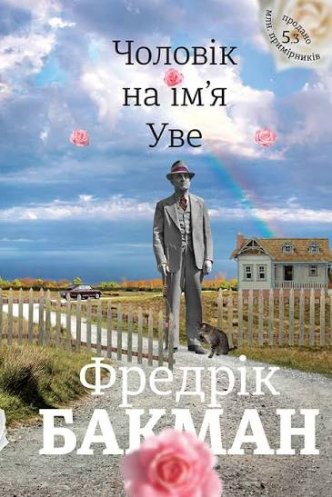

Затишок & Кава
Чоловік на ім’я Уве
Напруга: 2 із 10 · Роман
Персоналізована добірка з 2–4 книг замість тисяч однотипних позицій. Пошук за атмосферою, жанром, напругою та емоційним запитом.
Налаштуй настрій, жанр, напругу й обсяг — і отримай добірку, створену саме під тебе.
Персоналізований підбір без сюжетних спойлерів, нескінченних списків та обов'язкової реєстрації.
Вайб-пошук замість полиць: знайди книгу під настрій
Шкала 1–10 показує рівень напруги та саспенсу
Щоденник читання та простір збережених заміток
Вішлист бажаного та полички у моєму просторі
Гортай стрілками або свайпом. Натисни на обкладинку, щоб відкрити її на весь екран і змінити масштаб. Добірка ілюстративна.
Ілюстративні відгуки уявних читачів — про досвід, для якого ми створюємо BookDrop.
Натисни на фото, щоб відкрити його на весь екран. Листай стрілками й наближай колесом миші.
Переглянь наш короткий маніфест усвідомленого читання та відвідай головне книжкове сховище планети.
Атмосферний погляд на спокійне читання та пошук свого книжкового вайбу.
101 Independence Ave SE, Washington, DC, США.